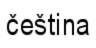

|
|
|  |
|
|
|
|
|
|
|
|
|
|
{kind=link}
欢迎访问Project Looking Glass核心！
Project Looking Glass是建立在Java技术的基础上的， 旨在通过3D窗口技术，给用户提供一个全新的视觉效果 和更多彩的感受。这是一个开放源代码的项目，是在Sun 微系统公司高级技术项目的基础上发展形成的。它为3D 窗口管理器和程序开发的API提供了一个3D运行空间， 而已有的应用程序不经修改即可在这个3D空间中运行。 目前，Linux平台上已有的应用程序可集成到Project Looking Glass当中。

本项目希望实现两方面的突破，－ 一是现有桌面环境的2D 外观本身，一是桌面环境的 发展方式。Project Looking Glass尚处在雏形阶段。我们还需要对各种理念和可能方 案进行研究和尝试。 我们把 Project Looking Glass 的源代码向整个社会公开，以便大家可对这项 技术的各个方面进行探讨，而不是将访问权限限制在个别开发人员身上。我们相信，对于这项激动人心、充满机会的项目来 说，开放源码是一个出色的开发模式。因此，我们殷切 地期待着您的参与！
本项目采用的主要开发语言是Java。考虑到Java的开发 效率很高，而且又有丰富的API资源可供选用，我们相 信Java是最好的选择。我们已经说过，我们计划对C++实 现绑定，这样本地应用程序就可以直接与系统进行交互。
新增功能0.62 发行版现在可供 下载，在“稳定版本”栏下。 新上传了 怎样连接 0.62 知识库页（Wiki）文档。 通过 NetBeans 来建造、运行 Project Looking Glass文档现在可供下载。 关于如何开始，请参考 "开始Project Looking Glass" 文档。 如果您想了解项目最新的进展，请访问 项目论坛。 |
志愿者聚焦Pierre Ducroquet (pinaraf) “我也不记得当初是怎样发现 Project Looking Glass 的了... 只是记得，第一次 在自己计算机上运行它的时候，我简直惊呆了！从那以后，我就尽量腾出有限的空闲 时间来为项目做些工作。我觉得能帮忙的地方在市场方面 ：）。我所说的市场方面 包括：linuxfr 每次新版本的新闻发布、帮助维护邮件列表、把网站翻译成法文，以及 帮助维护在线聊天系统（欢迎大家加入！）。以后我想试试开发一些3D应用程序。我 对邮件浏览器很感兴趣，想开发一个新的邮件浏览器，采用sqlite数据库来存储邮件（ 支持邮件的快速查询）。” 很长时间以来，Pierre在论坛里都非常活跃，为社区成员提供支持。最近他有费了很多 工夫把网站翻译成了法文。这样一来，项目又吸引了很多讲法语的同仁的兴趣。在此，我们 对Pierre由衷地说声：“谢谢你！” |
关键特点目前我们正在专注于核心函数的开发，以便尽快实现3D浏览器，并对原先的平台进行精炼细化。当前的平台支持下列功能：
|
如果您已经等不及了...要开始设置一个开发环境，请参考" 开始Project Looking Glass" 文档。如果您是Windows用户，请参考 "在Microsoft Windows上运行LG3D开发版"。 建立起开发环境之后，您可以阅读 " Project Looking Glass开发手册"， 该文档提供了有关Project Looking Glass以及 如何为Project Looking Glass建立3D应用程序的 详细信息。还有"Project Looking Glass指南"，该文档也提供了开发LG3D应用程序的指导。 如果您准备为项目编写代码或文档，请参考" 为Project Looking Glass出力"文档，了解相关流程。 注：由于ATI板卡的驱动程序本身缺乏相关支持，Project Looking Glass 3D不能在回话模式下运行。 |
开发阶段
因为我们需要解决问题的规模庞大，而我们又希望集思广益，把每个人的创意都实现到平台当中，所以我们计划分阶段来完成这个项目。下面列出了初步划分的阶段：
| 阶段 0 | -6月 | 建立 概念演示版，用来展示我们我们关于3D桌面前景的可行性，并且形成开发工作的势头。同时，开始着手 对初始架构进行精炼，并发布一个以Java 3D为基础的开发版。 |
| 阶段 1 | 04年4月 - 05年3月 | 公布开发版的源代码，开始对API和平台进行精炼。源始的API只是一个开端，进一步 的发展将在您的帮助下完成。因此，这一阶段API的更新会非常频繁。 |
| 阶段 2 | 05年4月 - | API最后成型，重点转向3D应用程序开发上。 |
| 阶段 3 | TBD |
正在进行的子项目
下面列出了lg3d（Looking Glass3D）- 核心项目（包括lg3d-演示程序, lg3d-孵化器）之下的子项目。感谢您的支持！如果您有任何建议，我们非常欢迎！请到javadesktop.org论坛上回复 这个话题。关于X11应用程序集成方面的专题，请到lg3d-x11项目页上查阅。

-
Javadoc API 0-6-2
Kirk Turner (gameldar), Hideya Kawahara (hideya)
-
Project Looking Glass 指南
Kirk Turner (gameldar)
-
3D 摇摆 L&F
Kirk Turner (gameldar), Paul Byrne (paulby)
-
闪现屏幕
Phil Dowell (phild)
-
lg3d-art 项目
本项目提供了一个为Project Looking Glass共享附加模型 和创意的空间。对于您的贡献，我们非常欢迎！
- lg3d-孵化器上的项目
名称 说明 类路径 负责人 乒乓 简单的3D游戏 org.jdesktop.lg3d.apps.pingpong Johann Glaser (hansiglaser) 启动程序 应用程序启动器的原型 org.jdesktop.lg3d.apps.luncher Henrik Baastrup (hbaastrup) 3D 浏览器 3D 网页浏览器 org.jdesktop.lg3d.apps.browser3d Chris Rondot (beer28)、David Vallejo (dragmor) 和 David Weizades (ddew) DemoJMFJ3D LG3D专用JMF 播放器 org.jdesktop.lg3d.apps.jmf23D sat1196 TBD 3D 瞄准器客户端 TBD Jack Wu (wulabs) 西洋镜 图像浏览器 org.jdesktop.lg3d.apps.zoetrope Yuichi Sakuraba (sakuraba) TBD 邮件阅读器 TBD Dai Odahara (dai) JavaWorkSpace 网络智能3D操作空间 org.jdesktop.lg3d.apps.intel3d Ashish (sri_ashish7s) TBD 生活游戏 TBD dwarfy_lenain (dwarfy) 时钟 3D 时钟 org.jdesktop.lg3d.apps.clock Juan González (opsi) Ls3D 3D的"ls" org.jdesktop.lg3d.apps.ls3d Endo Yasuyuki (yasuyuki) -
文档本地化
语言 负责人 中文 温鹏 (wenpeng) 捷克文 Petr Hejl (sickboy) 荷兰文 Martjin Kools (marve) 法文 jibe77, Pierre (pinaraf) 德文 Christian Ost (cost) 意大利文 Giordano Fracasso (giosquad) and Danilo Bonardi (trix180) 日文 Yuka Kamiya (kyuka)、Hideyuki Otokawa (otokawa)、Yuichi Sakuraba (sakuraba)、Kazuhiro Kazama (kazama)和Endo Yasuyuki (yasuyuki) 罗马尼亚文 Abibula Aygun (aygun) 西班牙文 Sergio Ivan Marcin (bitbeat) - 参考
-
知识库
主题 负责人 知识库（wiki） Martijn Kools (marve), David Weizades (ddew), Paul Shoemaker (t0rn) 3D UI 理念与讨论 Paul Shoemaker (t0rn), qgnjon, David Weizades (ddew) LG3D 开发小组 / 发行版本 Van der Haegen Mathieu (dwarfy)
需要您帮助的方面
下面列出了我们需要您参与的方面：
{kind=link}
- LG3D 3D API 精炼、精炼、再精炼!
- 3D窗口管理器UI设计开发 - 有下列文档可供参考：
Project Looking Glass UI设计探讨 以及 相关技术 - 新型3D应用程序的开发
- C++ 客户端API及其实现
- GNOME/KDE 兼容性
- 增强屏幕捕捉（ScreenCapture）功能，以及增加捕捉桌面mpeg的工具
- 创建/寻求一个XML日志分析器，着重实现对lg3d事件日志的处理能力，并制作文档
- 配置管理UI
- 建议
请查阅 lg3d-x11项目页，寻找关于X11应用程序集成的专题。我们非常感谢您的帮助！
如何贡献您的帮助
第一步，请考虑申请项目观察员的身份，了解项目的情况并加入项目论坛。关于如何为项目提供帮助的更多信息，请参考 为Project Looking Glass出力文档。 请参阅 JavaDesktop 社区管理方针，以便了解JavaDesktop社区项目，比如说Project Looking Glass，的一般 管理方针。
问题汇报
要了解目前存在的问题，请点击 问题跟踪，该链接在侧面导航条的项目工具栏下。您可以对 问题和缺陷进行查询，或直接寻找特定的问题。如果您 遇到的问题没有在这里列出，您可以把您的问题添加进去。您可以到 javadesktop.org论坛去查看EMail存档，寻找相关信息。
报告问题时，请您明确说明您计算机的环境信息，以及您遇到问题的症状。如果出现了系统崩溃，您可以从下列日志文件当中找到非常有用的信息：
- /var/tmp/lgserver.log
- /var/log/XFree86.0.log
这个日志可能很长。请注意(EE)打头的内容，找出可疑的日志行，写进报告当中。 - hs_err_pid####.log
这个日志可能也很长。请把从头到
"--- P R O C E S S ---"之间的内容写进报告当中。
如果您以前没做过问题跟踪，建议您参考下列介绍性文档：
保持联系
Project Looking Glass处于连续不断的发展当中。了解Project Looking Glass最新进展的最好方式是订阅 Project Looking Glass邮件组，点击侧面导航条上项目工具栏目下的邮件组 https://lg3d.dev.java.net/即可。根据您的兴趣所在，有若干个专题的邮件组可供您选择。
- 如果您只想了解这方面的新闻，请订阅announce@lg3d.dev.java.net。
- 如果您是开发人员，想探讨Project Looking Glass方面的问题，请订阅 interest@lg3d.dev.java.net。
- 如果您对许可证问题感兴趣，请订阅 lg3d_license@dev.java.net。
资源
- FAQ - 常见问题解答
- 开始Project Looking Glass
- 在 Microsoft Windows 上运行 Project Looking Glass 开发版
- Project Looking Glass 开发人员指南
- 通过 NetBeans 来建造、运行 Project Looking Glass
- Project Looking Glass 指南
- Java 程序设计语言代码规范
- javadesktop.org 论坛: Project Looking Glass 3D
- 问题跟踪查询
- JavaOne 2004 幻灯片 (PDF 900KB)
- Project Looking Glass: 其架构以及API简介。
- DRAFT - LG3D API 设计概览 (PDF 330KB)
- LG3D 发行版 0.62 Javadoc
- 怎样连接 0.62 知识库（Wiki）页
- 相关技术
- UI设计探讨
写在最后...
感谢您花时间访问本站，感谢您对Project Looking Glass的支持！我们希望您加入我们的项目，和我们 分享项目开发的乐趣和机会。 我们还开通了一个在线聊天频道，目前访问还不是很频繁，但这是一个良好的开端，链接为：irc.freenode.net上的#projectlookingglass。
Project Looking Glass开发小组
$Revision: 1.1 $ $Date: 2006-05-09 17:46:43 $